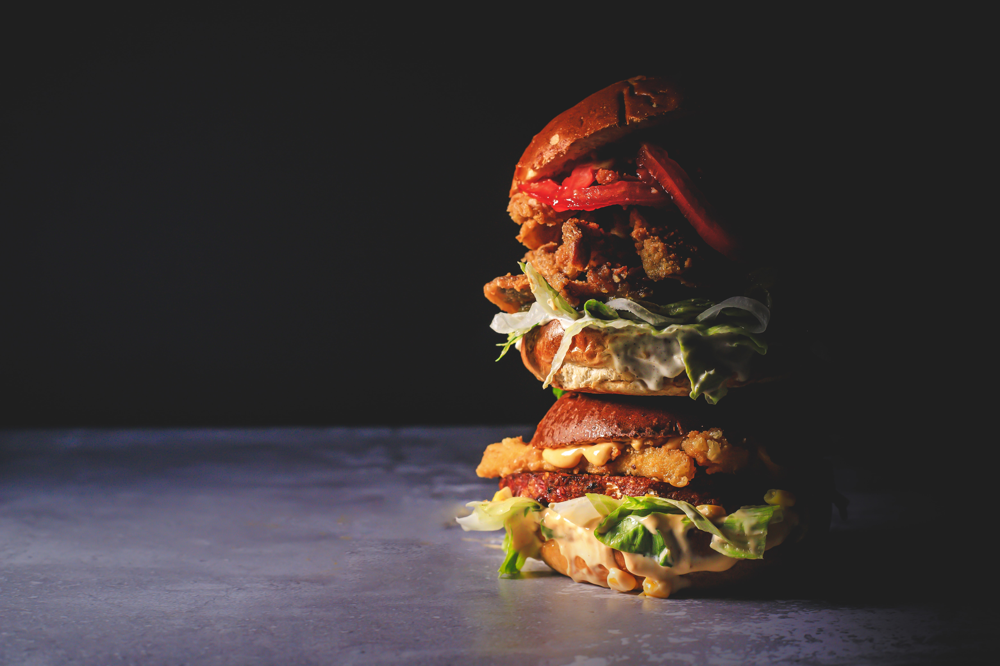

5 best places to eat vegan burgers in Zagreb (Croatia)

June 5th celebrates National Veggie Burger Day. Many animal associations note that vegetable burgers are a better option for the environment and the fight against climate change, taking into account the fact that the production of just one meat burger requires more than 2,000 liters of water, while the production of vegetable burgers requires 150 liters of water.
Vegan burgers are full of protein, fiber and other nutrients and are cholesterol-free, making them a much healthier option.
They can imitate various types of animal meat, without preservatives and artificial colors. Every day, the technology of their production is advancing even more, as well as their availability in shops and restaurants.